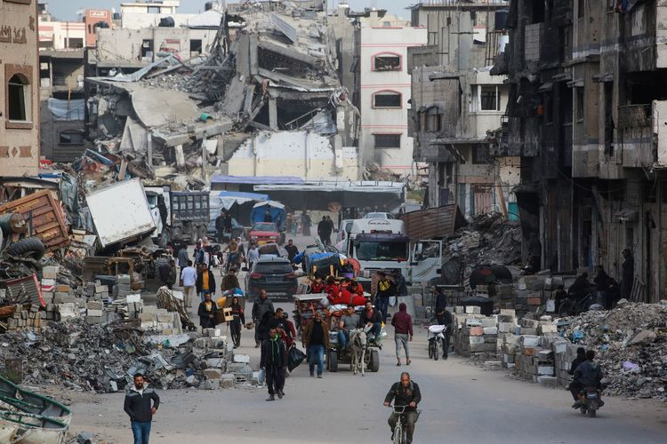
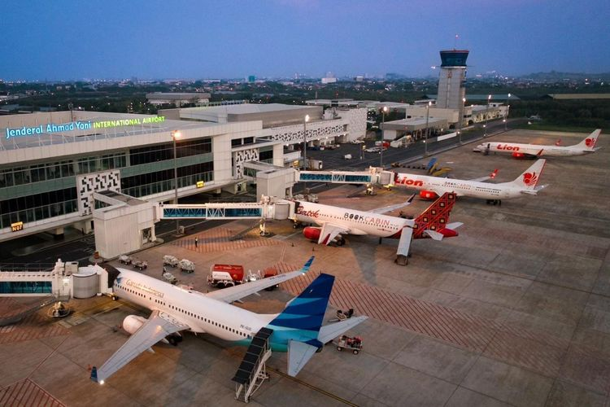

.jpg)
MUI: Israel Harus Dihukum Sesuai Hukum Internasional

MUI memberi catatan terhadap peluang dibukanya hubungan diplomatik antara Indonesia dengan Israel, jika Palestina merdeka. Tegas MUI, Israel sebagai negara yang melakukan kejahatan tetap harus dihukum sesuai dengan hukum internasional. "Israel harus dihukum sesuai dengan hukum internasional dan menangkap paksa Netanyahu karena telah melakukan kejahatan yang sangat mengerikan sebagaimana yang telah diperintahkan ICC (International Criminal Court), " ujar Ketua Bidang Hubungan Kerja Sama Internasional MUI, Sudarnoto Abdul Hakim dalam keterangannya, Kamis (29/5/2025).
klik disiniStatus Bandara Ahmad Yani di Semarang Jadi Internasional, 3 Maskapai Penerbangan Buka Rute Internasional

Bandara Jenderal Ahmad Yani di Kota Semarang, Jawa Tengah, kini statusnya kembali menjadi bandara internasional. Seiring dengan hal itu, Gubernur Jawa Tengah Ahmad Luthfi mengumumkan bahwa bandara ini akan segera melayani penerbangan langsung dari dan ke luar negeri. Tiga maskapai, yakni AirAsia, Scoot, dan Malindo, telah menyatakan kesiapannya membuka rute internasional dari bandara tersebut.
klik disiniMegawati Hangestri Perkuat Pelatnas Jelang Turnamen Internasional 2025
Pengurus Pusat Persatuan Bola Voli Seluruh Indonesia (PP PBVSI) resmi memanggil 15 atlet voli putri ke pemusatan latihan nasional (pelatnas) guna mempersiapkan diri menghadapi tiga ajang internasional penting yang berlangsung selama Juni hingga Agustus 2025. Wakil Kepala Bidang Pembinaan dan Prestasi PP PBVSI, Loudry Maspaitella, mengungkapkan bahwa pemanggilan ini mengacu pada penilaian performa para pemain selama gelaran PLN Mobile Proliga 2025.
klik disini